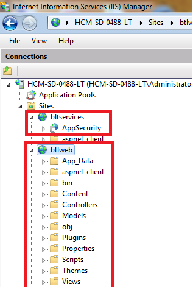

Best Practices for ASP.NET MVC Application
Introduction
By many years, I always tried to implemented the best sulotion for .NET, specific on C#. Some of my concerns are how we can manage good data access technical, how we can make the plugin framework for easilly maintain and work on big team, how we have multi-thems, multi-languages in one site. And now I am really happy, because I can introduce it in this example code.
Project Status: In progress
History:
- Version 0.5 (18-05-2012): finished integration for Twitter & Google login. Improved for login model. Refactoring all actions related to authentication to DCI patterns
- Version 0.4 (09-05-2012): Add login with social network accounts using DotNetOpenAuth version 2. Improve DCI architecture on this example.
- Version 0.3 (29-04-2012): separated code into service, try to build Domain Event, Pub-sub architecture, and DCI as well.
- Version 0.2 (20-04-2012): add new customized controller, customized razor view engine. I am going to integrating multi-themes on razor, but it is still on processing.
- Version 0.1 (18-04-2012): Plugin framework, data access layer using Entity Framework, Ioc container using Autofac
Building the Sample
- Data Access Layer (EF with best practices)
- Plugin Framework (based on compiled View)
- SOA (Service Oriented Architecture) using Microsoft WCF 4.0
- DCI (Data Context Interaction)
.NET components:
- ADO.NET Entity Framework
- Autofac for IoC container
- ASP.NET MVC 3.0
- Microsoft WCF 4.0
- AutoMapper
- DotNetOpenAuth version 2
Architecture: Domain Driven Design on design Domain, Service Oriented Architecture (SOA)
Solution structure:

Guidance for install service:
You have to host AppServiceIISHost to IIS as below

As you see, I host AppSecurity as a service on IIS, and host web application into IIS as well.
Testing service using wcftestclient tool:

Data Connection String:
You have to change database connection string inside web.config in AppSecurityService point to your database server. I give you an example for this as below
<connectionStrings>
<add name="DefaultConnection"
providerName="System.Data.SqlClient"
connectionString="Server=.\SQLEXPRESS;Database=AdvertisementDB;Integrated Security=false;
Persist Security Info=False;User ID=sa;Password=123456;Connect Timeout=120;MultipleActiveResultSets=True;" />
</connectionStrings>
<connectionStrings> <add name="DefaultConnection" providerName="System.Data.SqlClient" connectionString="Server=.\SQLEXPRESS;Database=AdvertisementDB;Integrated Security=false; Persist Security Info=False;User ID=sa;Password=123456;Connect Timeout=120;MultipleActiveResultSets=True;" /> </connectionStrings>